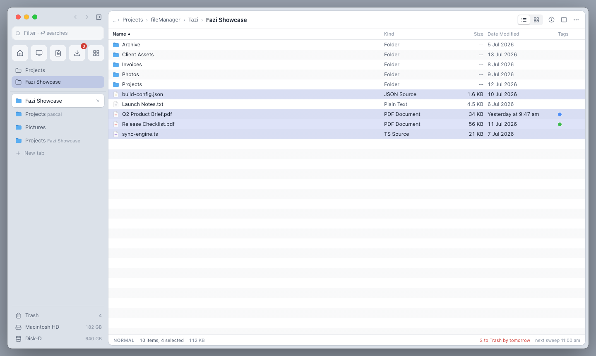
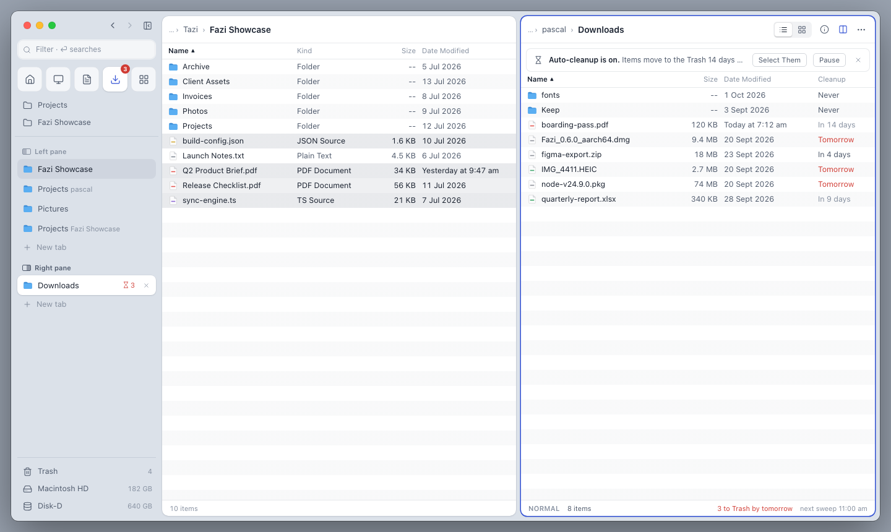

Rail A
One column owns the window, as in Arc. Search sits at the top, system places become icon tiles, and open tabs fill the rest. The file list floats as an inset card, and the toolbar disappears.
- Tabs
- One list in the sidebar; dual pane splits it into Left and Right groups.
- Path
- Breadcrumbs in each card’s header.
- Strength
- Calmest window. The most room for long tab names.
- Tradeoff
- Hiding the sidebar (⌥⌘S) hides the tabs too. Opens in light theme.